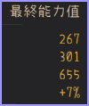
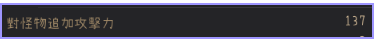

好魚版攻擊力計算機
各位好，歡迎使用本計算機，以下是使用說明：
1.確認自身已持有那些BUFF，面對若有已持有的效果，請選"不選擇"

2.開啟自身的裝備(I)後，點擊"我的能力值"
確認最終能力值那一排的數值為何

如果職業型態為"繼承"，請輸入第1個數字；
反之，若型態為"覺醒"，請輸入第2個數字
✦特殊職業：莎亦僅為"繼承"，巡林者&智者僅為"覺醒"✦
3.確認畫面左下角的"對怪物追加攻擊力"項，數值為多少

完全確認完之後就能開始使用此計算機囉d(`･∀･)b
最終能力值攻擊力：
怪物追加攻擊力：
職業&型態：
是否啟用職業BUFF：
選用的克羅恩套餐：
是否有教堂BUFF：
是否有別墅BUFF：
是否啟用貝爾的心臟：
選擇使用的靈藥BUFF：
選擇使用的香水BUFF：
持有+15攻擊力家具BUFF?：
持有馬具BUFF?：
額外攻擊力：
此欄位適用於未持有活動道具效果的額外補正用
如已持有狀態的情況下可以直接跳過
(僅組隊適用)隊伍內有莎亦?：
請注意如果自身為莎亦，則選"不選擇"
計算結果：
目前的版本還很粗糙，會慢慢優化
以下的設計會在後日補上
如網站有問題可以私訊我DC:star_thefish
龍女配莎亦的部分目前會有問題，需要多-25攻擊力
熱門獵場比較：